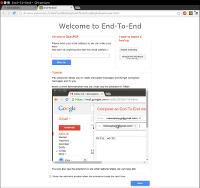
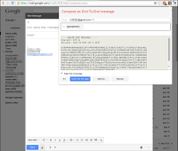

End-To-End webmail encryption
In early June, a team at Google released some code that brings support for OpenPGP encryption to webmail clients running in the Chrome/Chromium browser. Called simply End-To-End, the initial release was made in source form only—for the purposes of security review.
End-To-End was announced in a June 3 blog post. It is designed to be compiled as a browser extension for Chrome or Chromium, and it provides webmail clients running in those browsers with OpenPGP-compatible message encryption and decryption—including support for signed messages. The blog post puts End-To-End into the context of Google's ongoing security enhancements for Gmail, but claims End-To-End itself is not a Gmail-specific program. Nevertheless, at the moment there is not an official list of which other webmail services are supported; in fact, the only other one referenced is a bug report indicating some problems using End-To-End with the open-source Zimbra client.

When up and running, End-To-End allows users to compose an outgoing message, then encrypt and sign it locally with an OpenPGP key. End-To-End can import an existing OpenPGP keyring, which it then stores in its own localStorage area so that the keys are accessible from within Chrome/Chromium's sandbox. It can also generate a new key and keyring, though it supports only Elliptic Curve (EC) key generation. Existing keys—both private and public—of non-EC types are still supported for all other operations. End-To-End's keyring is separate from any other OpenPGP keyring the user might already posses, so the public keys of other users must be imported into End-To-End's keyring before they can be used. Users can either import the entire external keyring during setup, or import each key individually (which is an option presented when opening an encrypted message).
The extension differs a bit from other OpenPGP implementations in that it stores the user's private and public keys on a single keyring, and only supports encrypting the entire keyring with a passphrase, rather than individual keys. The FAQ on the main page says that this was a decision made to minimize the number of passphrases users are required to remember.
Usage
At this point, End-To-End is provided as source code only, which users must build and manually install as a browser extension. For those who do not use Chrome/Chromium regularly, note that it is also necessary to enable "Developer mode" in the browser so that one can install a local, un-packaged extension.
When in use, End-To-End provides a button in the browser's extension toolbar that provides access to a pop-up message composition window, a pop-up decryption window, and utility functions (which include key import). If you are logged in to a webmail client and composing a message, the composition window copies the current contents of the in-progress message into its own mini-composer; if the recipient's public key is in the keyring, End-To-End will use it when you click the "Protect this message" button (alternatively, you can enter the recipient's address within the mini-composer or encrypt the message with a passphrase). PGP signatures are also supported; one can even click the "Protect this message" button with no recipients included to add a PGP signature without encrypting the message's contents.

However you choose to protect the message, clicking on the "Insert into the page" button copies the PGP-protected text back into the webmail composition window. Similarly, if you receive an encrypted message, the End-To-End menu button can copy its contents into its decryption window and unscramble it.
Users who are accustomed to PGP-style encryption will not find the process difficult. The first big question to answer when assessing the project's usefulness is whether or not End-To-End makes email encryption easier for anyone new to the subject. This is not easy to say; some might find the separate End-To-End window that hovers over the main webmail message composer a bit perplexing. Others might notice that if the browser tab loses focus, the End-To-End window and its contents vanish immediately.
Of course, there are security reasons for these behaviors: End-To-End does not work directly in the page contents so that it is isolated from other elements in the page (which, intentionally or not, could interfere and risk a security breach) and there are good reasons not to leave the contents of the window available if the user is away doing something else.
Security
The other big question concerning End-To-End is whether or not it is genuinely safe to use. In the blog announcement and on the project's home page, the team emphasizes that this is a project still in development and that the release is meant to attract more scrutiny of End-To-End's security. The page even asks developers not to download the code, compile it, and submit the result to the official Chrome extension "store," on the grounds that it still requires further vetting.
Historically, PGP encryption for webmail has been a thorny issue. One of the main reasons was that an encryption library (in JavaScript) delivered in a web page is regarded as suspect, since it (like other page content) could be modified by an attacker at the server (or even en-route), the content and the JavaScript execution environment can be modified by other JavaScript on the page, and there are potential information leaks (such as reliance on the JavaScript interpreter's garbage collection rather than any real "secure delete" facility).
But End-To-End does not rely on encryption routines or secrets sent with the page content itself. In that sense, it is as secure as composing a message in a text editor, encrypting it on the command line, then pasting it into the webmail client. There are still risks, of course, but the bigger concerns for a built-in PGP function or extension are concepts like key management and sandboxing—along with implementation details of the core routines, which still should be audited.
The project FAQ supplies a few basic answers to common questions. For example, as mentioned above, End-To-End uses a single keyring to store the user's private key and all collected public keys. The encryption keys are also stored in memory unencrypted, which the FAQ notes could mean that key material is sent to Google in a crash report if the browser's "send crash reports" feature is enabled. That is certainly a problem one would hope to see fixed before End-To-End becomes more widespread or a built-in feature.
As always, one is dependent on the browser's implementation of features like sandboxing and secure localStorage to be free of serious errors. Perhaps to that end, the blog post notes that End-To-End, although still experimental, is eligible for Google's vulnerability bounty program.
On the other hand, End-To-End does implement its own cryptographic functions and OpenPGP routines, rather than using an existing library like OpenPGP.js. Of course, OpenPGP.js may not be a widely-scrutinized project in the grand scheme of things; if Google chooses to invest further in End-To-End it could attract more eyes. But OpenPGP.js is already in use by other projects with similar aims, such as Mailvelope—which also has the advantage of being usable in Firefox as well as Chrome. If Google persists in maintaining End-To-End as a Chrome/Chromium-only tool, there would be competing implementations in webmail encryption, with the possibility of incompatibilities. As Enigmail has seen, even adhering to the relevant RFCs does not protect one from all possible compatibility problems.
Perhaps there are valid reasons for maintaining a new in-browser OpenPGP tool; End-To-End makes some implementation choices that other OpenPGP projects might not agree with. For example, it does not support fetching public keys from a keyserver (perhaps because doing so would complicate the sandboxing process). Similarly, End-To-End opts for a single passphrase for the entire keyring for the sake of simplicity, but not every user will find that trade-off worthwhile.
The landscape of webmail-encryption tools is sparse as it is; the
other major approach is WebPG, which is built around the Netscape
Plugin API (NPAPI) that, these days, is used less and less even by
Mozilla. But WebPG does call out to the system's GnuPG library, which
is ostensibly a more widely-tested PGP implementation than either End-To-End
or OpenPGP.js. But even if the security community does thoroughly vet and
enhance End-To-End's cryptographic features, as Google hopes it will, the
project will still face the challenge of winning over a non-trivial
percentage of webmail users. And that may be an unsolvable problem,
regardless of the implementation details.
| Index entries for this article | |
|---|---|
| Security | |
| Security | Encryption/Email |
Posted Jun 26, 2014 10:51 UTC (Thu)
by mbunkus (subscriber, #87248)
[Link] (1 responses)
For the same reason S/MIME encryption will never be possible this way.
Another danger I see is that pretty much any modification of signed content invalidates the signature. Enigmail developers can probably tell you all about it: after Enigmail has signed the content and handed it back to Thunderbird it may be re-formatted due to overly long lines, thus invalidating the signature. I fear web mail clients will prove equally difficult. What's worse is that this is not easily detectable on the client side; only the recipient will notice it – and hopefully not trust that message.
Full support for PGP/MIME and S/MIME would require having access to the whole message – the relevant header fields, the unmodified body structure etc, both for decryption of existing emails and for encryption of new ones. This requires special support by the server; having a generic browser-side plugin will simply not suffice.
Posted Jul 1, 2014 22:21 UTC (Tue)
by jwarnica (subscriber, #27492)
[Link]
Being produced by Google themselves, if its not the same team as GMail, then it is a team in the next pod, or building. I don't see coming up with a gmail specific mbox-type data chunk up/download hunk as being an insurmountable problem.
Even dealing with inline content, IIRC from skimming the Enigmail articles, there was much finger pointing going on. The Google types will get together in their subsidized campus food court, or play some foosball, and hash things out.
It might not be immediately useful to non-gmail, non-chrome users, but then, neither was SPDY.
Posted Jun 26, 2014 14:59 UTC (Thu)
by ballombe (subscriber, #9523)
[Link]
Posted Jun 28, 2014 7:04 UTC (Sat)
by steveriley (guest, #83540)
[Link] (2 responses)
Posted Jun 28, 2014 12:55 UTC (Sat)
by mathstuf (subscriber, #69389)
[Link]
Posted Jun 30, 2014 12:48 UTC (Mon)
by james (guest, #1325)
[Link]
End-To-End webmail encryption
End-To-End webmail encryption
End-To-End webmail encryption
This is something that need to be addressed at some point
End-To-End webmail encryption
End-To-End webmail encryption
Basically, it doesn't harm much and keeps people using GMail:
End-To-End webmail encryption
You’ve recently received lots of messages about photography and
cameras. In Gmail, you may see an ad with a deal from a local camera
store.
From Google's point of view, if you subscribe to marketing emails or
receive receipts, you've demonstrated you might spend money!